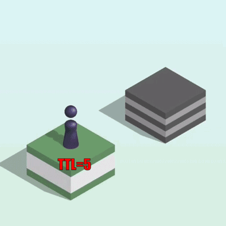
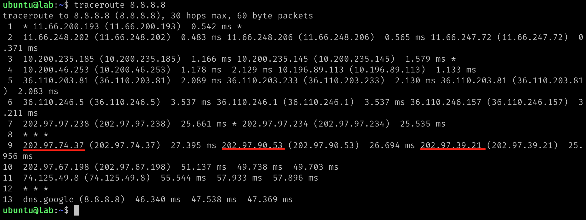
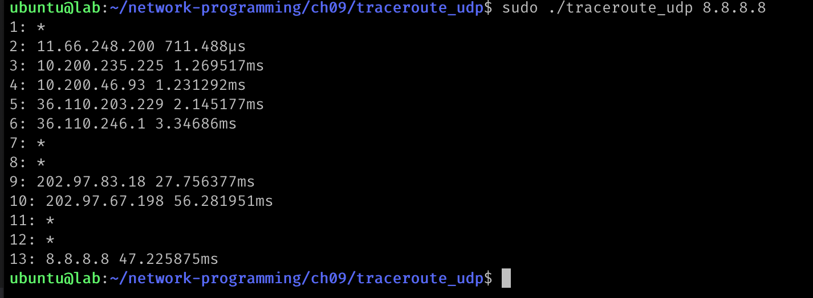

traceroute是一种用于诊断网络连接问题的实用程序，它可以确定两台计算机之间的网络路径和网络时延。traceroute工具在网络工程、系统管理和网络安全中都有广泛的应用。
traceroute工具也是使用了ICMP这种Internet控制消息协议，它可以让用户探测到目标主机与本地主机之间的网络路径和路由器（或网关）的数量。traceroute工具会向目标主机发送一系列UDP或ICMP报文，每个报文的Time To Live (TTL)值逐渐增加，直到达到设定的最大值，如果到达目标主机，则目标主机可能返回一个ICMP DestinationUnreachable包，否则返回一个 ICMP TimeExceeded包。通过分析响应包中的IP地址和时间信息，traceroute可以确定网络中的路由器和每个路由器的延迟时间。通过多次执行traceroute，可以帮助用户更好地理解网络的拓扑结构和性能瓶颈，以便优化网络连接。
最主要的, traceroute利用IP协议中的TTL的作用。在 IP 协议中，TTL（Time to Live）是一个8位字段，代表着一个 IP 数据包在网络中最多可以经过的路由器数量，也就是生存时间。每经过一个路由器，TTL 的值就会被减一，当 TTL 的值变成 0 时，该数据包会被路由器丢弃，并向源主机发送一个 ICMP 时间超时消息。
TTL 的作用是为了防止 IP 数据包在网络中无限制地循环，也就是防止出现数据包在网络中无限制地跳转，浪费网络资源。通过设定 TTL 的值，可以让数据包在网络中跳转一定的次数后被丢弃，从而避免网络中的拥塞和不必要的负荷。使用 traceroute 工具时，就是通过逐步减小 TTL 的值，依次向距离越来越远的路由器发送 ICMP 消息，从而获取到路由路径信息。

Linux中的traceroute是一个功能强大的工具，有很多的参数:
|
|
这篇文章主要介绍traceroute底层的实现原理，所以不会完全复刻Linux自带的traceroute所有的参数的功能，否则会有大段的代码处理这些参数的逻辑，本文只是实现一个最基本的功能。
注意traceroute工具发送设置了TTL的IP包时，可以使用ICMP、UDP、ICMP甚至其他的IP支持的协议，Linux支持UDP、TCP、ICMP这三种协议， MacOS使用UDP协议，不过TTL为0后返回的还是ICMP协议。Apple公司的traceroute.c是一个很好的学习traceroute的代码，虽然它支持发送UDP协议的包，不过这次我们使用Go语言介绍如何实现traceroute。
说起协议了，有些人可能会问了，为啥不直接使用ICMP包，而是还要实现UDP和TCP的发送包呢？这个物理网络实际的网络设备的处理是有关的。在同一个层级的节点中，比如北京联通的网络出口上，并不会只有一台网络设备，否则这台设备挂了，或者这台设备的带宽不够了，就会导致网络丢包或者不通，所以一般会部署多台设备，那么对于一个网络流来说，一般会使用他们的源目地址和源目端口做哈希，以便把同一个session的数据流发送到同一台设备上，所以使用 UDP或者TCP可以固定五元组，让探测流总是经过同一台设备，以便检查固定的链路是不是有问题。当然这也不是绝对的，有可能同一个五元组也会经过不同的设备。
比如下面的traceroute,在第9跳的时候就经过了三台设备(其他跳中也有经过多台设备的情况)

在Linux中，默认情况下，traceroute使用的是UDP协议，目的端口从起始值为33434开始，每个TTL值加1，最大值为65535。这是因为当TTL值为1时，数据包到达第一个路由器，如果该路由器启用了ICMP错误消息的生成功能，它会将一个ICMP TTL过期消息返回给traceroute。为了避免端口被旁路其他应用程序占用，traceroute将目标端口号加上TTL值作为UDP包的目的端口。这样每个TTL的数据包都会使用不同的目的端口号，保证traceroute能够得到正确的TTL值。
使用UDP包探测 (raw socket)
首先，我们使用UDP包进行探测，然后处理返回的ICMP包。
这里有几个技术点:
- 如何设置TTL？
- 如果处理不同的IP protocol？
- 如果匹配ICMP包和traceroute的探测UDP包？
第一种方式是我们使用raw socket,利用gopacket生成探测包，设置TTL, 创建一个syscall.Socket用来发送UDP包，再创建一个icmp.PacketConn用来接收ICMP包。
rawsocket的生成使用下面的方法:
|
|
然后调用Sendto系统调用发送IP+UDP的包：
|
|
读取ICMP消息理论也可以使用这个socket读取，不过这里我们使用下面的方法专门接收icmp的包:
|
|
这个专门读取ICMP的rconn尝试读取ICMP包：
|
|
正常情况下会读取到ICMP的返回包，也可能读取到其他traceroute和ping的返回的包，所以先解析出ICMP message,还要进一步的根据源目IP和ID、Seq等进行判断。
一个设备返回ICMP TimeExceeded包时，会把IP Header以及之后的8个字节的数据返回。对于UDP来说，IP header中包含源目IP,UDP前4个字节正好是源目端口，基本上我们使用这四元组可以将返回的包和请求包匹配在一起，但是为了进一步避免误判，我们还可以设置IP Header中的id,把它设置成进程id,这样再增加一个匹配项，基本可以避免误判。注意这里我们目的端口每次ttl加一它也会加一，你也可以目的端口固定， “任从你心”:
|
|
完整的代码如下，关键行上我加上了注释：
|
|

注意使用root权限或者给程序加cap_net_raw,当然最简单的就是使用root进行测试了。
使用UDP包探测
Go标准库是支持发送UDP包的，所以我们也可以使用标准库来发送探测包，使用相同的icmp包处理返回的ICMP消息。
可以为什么我们不一开始就介绍这种方式呢？
这是因为标准库为我们封装的太好了，所以我们基本上只能发送UDP包，很难设置IP Header,所以每办法设置ip header中的ID (ttl可以使用net扩展包中的ipv4来设置)，这样就少了一项匹配项，只能通过源目IP和原木端口进行判断了。
使用标准库下面的方法创建发送的net.PacketConn:
|
|
因为我们没有办法设置IP header中的ttl,还需要创建一个ipv4.PacketConn来设置TTL：
|
|
还是使用rconn来读取icmp包:
|
|
完整代码如下：
|
|
整体代码和上一节的代码类似，只不过我们没有办法设置ip header了。只能通过ipv4.PacketConn设置一下ttl。
使用TCP包探测
和上面的UDP方法类似，我们也可以发送TCP的包进行探测。
我们只会发送TCP的PSH包 (syn包也可以)， 中间设备会返回ICMP TimeExceeded包，目的主机极大可能认为这是一个非法的包，直接把这个包丢弃，而不是返回一个ICMP DestinationUnreachable,所以你可能需要等待最大TTL探测完。
发送这个探测包理论不会对目标主机造成影响，因为TTL已经为0了。
发送我们使用下面的wconn:
|
|
接收icmp包我们还是使用下面的rconn:
|
|
每次构造一个TCP PSH包进行探测，这里我们的PSH包的payload没有设置，如有需要你也可以加上:
|
|
处理 ICMP回包的方法基本和上面类似。
上面发送UDP包的时候不是没有办法设置IP header的ID么？TCP探测包有了新的途径。TCP 包中的前两个字节是源端口，接下来两个字节是目的端口，再接下来四个字节是ID，我们正好可以使用这个id做匹配。
所以抽取匹配项的时候我们把这个id抽取出来了，当然发送的时候也使用探测段的进程id进行了设置。
这里我们还尝试把设备的IP地址转换成域名，更方便的检查中间设备所在的区域。
如果我们能结合IP地址地理位置库，我们还可以显示出设备所在的国家、城市、服务商等。
完成的代码如下：
|
|
使用ICMP包探测
最终，如果没有特殊的需求，我们可以使用简单的ICMP包作为探测请求包。
使用icmp探测的好处就是我们可以使用一个icmp的PacketConn来进行发送和读取，第二个好处就是我们可以使用icmp中的Echo消息中的ID和seq进行匹配。
这里我们没有必要自己进行匹配项的抽取了，直接尝试把返回的结果解析成Echo消息进行匹配项检查即可：
|
|
完整的代码如下：
|
|
我们使用这个程序探索一下github.com的机器，我使用的是阿里云的机器，消息经过了阿里云北京机房内网、北京电信、杭州电信、中国电信香港节点、日本节点、新加坡节点达到了新加坡机房。
下一篇，点赞数如果是偶数，我们介绍单播、组播和广播，点赞数如果是奇数，我们介绍如何发送IP包，如果点赞数为0，本系列停更，我们去更新Go并发和Rust并发的系列。